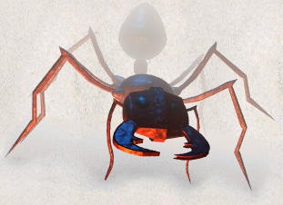

onsters you cannot see are not displayed on the screen. Beware! You may suddenly come upon one in a dark place. Some magic items can help you locate them before they locate you (which some monsters can do very well).
Hover the mouse over a monster to find out what it is called or select What's this? from the context menu or use the Look at command to obtain more information about it.
The command C allows you to assign a name to a monster, which may be useful to help distinguish one from another when multiple monsters are present. Assigning a name which is just a space will remove any prior name.
The extended command “#chat” can be used to interact with an adjacent monster. There is no actual dialog (in other words, you don't get to choose what you'll say), but chatting with some monsters such as a shopkeeper or the Oracle of Delphi can produce useful results.
6.1. Fighting
If you see a monster and you wish to fight it, just attempt to walk into it. Many monsters you find will mind their own business unless you attack them. Some of them are very dangerous when angered. Remember: discretion is the better part of valor.
If you can't see a monster (if it is invisible, or if you are blinded), a white questionmark will be shown when you learn of its presence. If you attempt to walk into it, you will try to fight it just like a monster that you can see; of course, if the monster has moved, you will attack empty air. If you guess that the monster has moved and you don't wish to fight, you can use the m command to move without fighting; likewise, if you don't remember a monster but want to try fighting anyway, you can use the F command.
6.2. Your pet
You start the game with a little dog, cat, or pony, which follows you about the dungeon and fights monsters with you. Like you, your pet needs food to survive. It usually feeds itself on fresh carrion and other meats. If you're worried about it or want to train it, you can feed it, too, by throwing it food. A properly trained pet can be very useful under certain circumstances.
Your pet also gains experience from killing monsters, and can grow over time, gaining hit points and doing more damage. Initially, your pet may even be better at killing things than you, which makes pets useful for low-level characters.
Your pet will follow you up and down staircases if it is next to you when you move. Otherwise your pet will be stranded and may become wild. Similarly, when you trigger certain types of traps which alter your location (for instance, a trap door which drops you to a lower dungeon level), any adjacent pet will accompany you and any non-adjacent pet will be left behind. Your pet may trigger such traps itself; you will not be carried along with it even if adjacent at the time.
6.3. Steeds
Some types of creatures in the dungeon can actually be ridden if you have the right equipment and skill. Convincing a wild beast to let you saddle it up is difficult to say the least. Many a dungeoneer has had to resort to magic and wizardry in order to forge the alliance. Once you do have the beast under your control however, you can easily climb in and out of the saddle with the “#ride” command. Lead the beast around the dungeon when riding, in the same manner as you would move yourself. It is the beast that you will see displayed on the map.
Riding skill is managed by the “#enhance” command. See the section on Weapon proficiency for more information about that.
6.4. Bones levels
You may encounter the shades and corpses of other adventurers (or even former incarnations of yourself!) and their personal effects. Ghosts are hard to kill, but easy to avoid, since they're slow and do little damage. You can plunder the deceased adventurer's possessions; however, they are likely to be cursed. Beware of whatever killed the former player; it is probably still lurking around, gloating over its last victory.